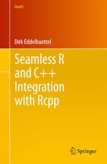

An Introduction to R Package Development with Rcpp
Andee Kaplan
An Introduction to R Package Development with Rcpp
Resources
 

Installation
- Setup
R for development
- Then install the
R Packages Rcpp and RcppArmadillo install.packages(c("Rcpp", "RcppArmadillo"))
devtools::has_devel()
Getting started
cppFunction() allows you to write C++ functions in R.
library(Rcpp)
cppFunction(
'int add(int x, int y, int z) {
int sum = x + y + z;
return(sum);
}'
)
add
## function (x, y, z)
## .Primitive(".Call")(<pointer: 0x107bf45a0>, x, y, z)
## [1] 6
Rcpp types
- Scalars:
int, double, String, bool
- Vectors:
IntegerVector, NumericVector, CharacterVector, LogicalVector
- Matrices:
IntegerMatrix, NumericMatrix, CharacterMatrix, LogicalMatrix
- R output:
List, DataFrame
Still use [] for accessing elements in Rcpp vectors, but () for accessing alements in Rcpp matrices.
sourceCpp
Can use standalone C++ files with extension .cpp and source them into R using sourceCpp(). If you do this, must include
#include <Rcpp.h>
using namespace Rcpp;
at the top of your C++ file and for each function that you want to use in R, prefix it with
Then, you can source your function using
sourceCpp("code/timesTwo.cpp")
timesTwo(1:10)
## [1] 2 4 6 8 10 12 14 16 18 20
Package Skeleton

Workflow
After editing/creating your package,
- Generate the necessary documentation changes with
devtools::document()
- Build and reload your packages

RcppArmadillo
Armadillo is a C++ linear algebra library aiming towards a good balance between speed and ease of use. We can use the R package RcppArmadillo to interface with this library.
- DESCRIPTION:
LinkingTo: Rcpp, RcppArmadillo
.cpp file:
#include <RcppArmadillo.h>
// [[Rcpp::depends(RcppArmadillo)]]
using namespace Rcpp; using namespace arma;